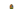

List of Mexican states by GDP
The following list shows the GDP (nominal) of Mexico's 32 states as of 2022, ranked in order. Overall, in the calendar year 2022, the Nominal GDP of Mexico at Current Prices totaled at US$1.42 trillion, as compared to US$1.27 trillion in 2021.
.png){kind=link}
| Federal entities by GDP 2022 (millions)[1][2] | |||||||
|---|---|---|---|---|---|---|---|
| Position | State | Nominal GDP (MXN) |
Nominal GDP (USD) |
GDP PPP (USD) |
Growth | Nominal GDP per capita | % of national |
| 1 | Mexico City | 4,270,240 | 212,506 | 443,661 | $22,823 | 15% | |
| 2 | State of Mexico | 2,577,033 | 128,244 | 267,744 | $7,380 | 9.05% | |
| 3 | Nuevo León | 2,349,027 | 116,898 | 244,055 | $19,452 | 8.25% | |
| 4 | 2,146,364 | 106,812 | 222,999 | $12,412 | 7.54% | ||
| 5 | Veracruz | 1,226,769 | 61,049 | 127,456 | $7,491 | 4.31% | |
| 6 | Guanajuato | 1,211,951 | 60,312 | 125,917 | $9,568 | 4.26% | |
| 7 | Baja California | 1,082,329 | 53,861 | 112,450 | $14,185 | 3.80% | |
| 8 | Sonora | 1,055,214 | 52,512 | 109,633 | $17,503 | 3.71% | |
| 9 | Chihuahua | 1,049,834 | 52,244 | 109,074 | $13,637 | 3.69% | |
| 10 | Coahuila | 1,034,560 | 51,484 | 107,487 | $15,699 | 3.63% | |
| 11 | Puebla | 902,651 | 44,920 | 93,782 | $6,736 | 3.17% | |
| 12 | Tamaulipas | 842,030 | 41,903 | 87,484 | $11,674 | 2.96% | |
| 13 | Tabasco | 748,259 | 37,237 | 77,741 | $15,092 | 2.63% | |
| 14 | Michoacán | 700,144 | 34,842 | 72,742 | $7,066 | 2.46% | |
| 15 | Sinaloa | 668,476 | 33,266 | 69,452 | $10,840 | 2.35% | |
| 16 | San Luis Potosí | 662,415 | 32,965 | 68,822 | $11,556 | 2.33% | |
| 17 | Querétaro | 656,317 | 32,661 | 68,189 | $13,266 | 2.31% | |
| 18 | Campeche | 521,137 | 25,934 | 54,144 | $27,562 | 1.83% | |
| 19 | Hidalgo | 482,226 | 23,998 | 50,101 | $7,530 | 1.69% | |
| 20 | Oaxaca | 479,985 | 23,886 | 49,869 | $5,657 | 1.69% | |
| 21 | Chiapas | 455,199 | 22,653 | 47,293 | $3,989 | 1.60% | |
| 22 |  Quintana Roo | 446,762 | 22,233 | 46,417 | $11,479 | 1.57% | |
| 23 | Yucatán | 428,208 | 21,309 | 44,489 | $8,996 | 1.50% | |
| 24 | Guerrero | 391,534 | 19,484 | 40,679 | $5,428 | 1.38% | |
| 25 | Aguascalientes | 356,022 | 17,717 | 36,989 | $12,028 | 1.25% | |
| 26 | Durango | 341,784 | 17,009 | 35,510 | $9,024 | 1.20% | |
| 27 | Morelos | 313,577 | 15,605 | 32,579 | $7,861 | 1.10% | |
| 28 | Zacatecas | 268,941 | 13,384 | 27,942 | $8,184 | 0.94% | |
| 29 | Baja California Sur | 261,572 | 13,017 | 27,176 | $15,556 | 0.92% | |
| 30 | Nayarit | 204,929 | 10,198 | 21,291 | $8,171 | 0.72% | |
| 31 | Colima | 168,921 | 8,406 | 17,550 | $11,010 | 0.59% | |
| 32 | Tlaxcala | 157,699 | 7,848 | 16,384 | $5,594 | 0.55% | |
| 28,462,110 | 1,416,399 | 2,957,102 | $10,950 | 100% | |||
Top 30 metro areas of Mexico with most GDP:
| Metropolitan areas by GDP 2021 (millions) [3] [4] | |||||||
|---|---|---|---|---|---|---|---|
| Metropolitan area | Position | GDP (MXN) |
GDP (USD) |
PPP
(USD) |
Population | GDP per capita (USD) |
PPP per capita (USD) |
| - | 25,803,508 | 1,272,839 | 2,569,222 | 126,705,138 | 10,046 | 20,277 | |
| Valley of Mexico | 1 | 5,897,909 | 290,933 | 587,247 | 21,804,515 | 13,343 | 26,932 |
| Monterrey | 2 | 2,050,414 | 101,143 | 204,157 | 5,341,171 | 18,937 | 38,223 |
| Guadalajara | 3 | 1,309,083 | 64,575 | 130,344 | 5,268,642 | 12,256 | 24,740 |
| Tijuana | 4 | 649,954 | 32,061 | 64,715 | 2,157,853 | 14,858 | 29,991 |
| Toluca | 5 | 626,230 | 30,891 | 62,353 | 2,353,924 | 13,123 | 26,489 |
| Puebla-Tlaxcala | 6 | 575,561 | 28,391 | 57,308 | 3,199,530 | 8,874 | 17,911 |
| Querétaro | 7 | 482,631 | 23,807 | 48,055 | 1,594,212 | 14,934 | 30,143 |
| León | 8 | 440,046 | 21,707 | 43,815 | 1,924,771 | 11,278 | 22,764 |
| Saltillo | 9 | 397,449 | 19,605 | 39,573 | 1,031,779 | 19,002 | 38,355 |
| Juárez | 10 | 363,107 | 17,911 | 36,154 | 1,512,450 | 11,843 | 23,904 |
| San Luis Potosí | 11 | 354,542 | 17,489 | 35,301 | 1,271,366 | 13,756 | 27,766 |
| Hermosillo | 12 | 352,152 | 17,371 | 35,063 | 936,263 | 18,554 | 37,450 |
| La Laguna | 13 | 332,734 | 16,413 | 33,130 | 1,434,283 | 11,443 | 23,099 |
| Veracruz | 14 | 305,487 | 15,069 | 30,417 | 939,046 | 16,047 | 32,391 |
| Aguascalientes | 15 | 296,206 | 14,611 | 29,493 | 1,140,916 | 12,807 | 25,850 |
| Chihuahua | 16 | 279,865 | 13,805 | 27,865 | 988,065 | 13,972 | 28,202 |
| Mérida | 17 | 269,603 | 13,299 | 26,844 | 1,316,088 | 10,105 | 20,397 |
| Villahermosa | 18 | 268,490 | 13,244 | 26,733 | 833,907 | 15,882 | 32,058 |
| Tampico | 19 | 263,139 | 12,980 | 26,200 | 927,379 | 13,997 | 28,252 |
| Mexicali | 20 | 248,772 | 12,271 | 24,770 | 1,049,792 | 11,689 | 23,595 |
| Culiacán | 21 | 226,191 | 11,158 | 22,522 | 1,003,530 | 11,118 | 22,442 |
| Cancún | 22 | 210,735 | 10,395 | 20,983 | 934,189 | 11,127 | 22,461 |
| Minatitlán | 23 | 203,271 | 10,027 | 20,239 | 359,228 | 27,913 | 56,341 |
| Reynosa | 24 | 200,111 | 9,871 | 19,924 | 837,251 | 11,790 | 23,798 |
| Xalapa | 25 | 190,494 | 9,397 | 18,967 | 789,157 | 11,907 | 24,035 |
| Morelia | 26 | 185,703 | 9,160 | 18,490 | 988,704 | 9,265 | 18,701 |
| Cuernavaca | 27 | 180,226 | 8,890 | 17,945 | 1,028,589 | 8,643 | 17,446 |
| Tehuantepec | 28 | 149,853 | 7,392 | 14,921 | 179,870 | 41,096 | 82,952 |
| Mazatlán | 29 | 147,507 | 7,276 | 14,687 | 501,441 | 14,511 | 29,290 |
| Celaya | 30 | 145,432 | 7,174 | 14,480 | 767,104 | 9,352 | 18,877 |
See also
[edit]General:
References
[edit]- ^ Citibanamex (June 13, 2023). "Indicadores Regionales de Actividad Económica 2023" (PDF) (in Spanish). Retrieved August 13, 2023.
- ^ International Monetary Fund. "Download World Economic Outlook database: April 2023". Retrieved August 13, 2023.
- ^ "Índice de Ciudades Sostenibles" (in Spanish). LNPP. Retrieved 2022-12-28.
- ^ "INEGI Censos Económicos" (in Spanish). INEGI. Retrieved 2022-12-28.